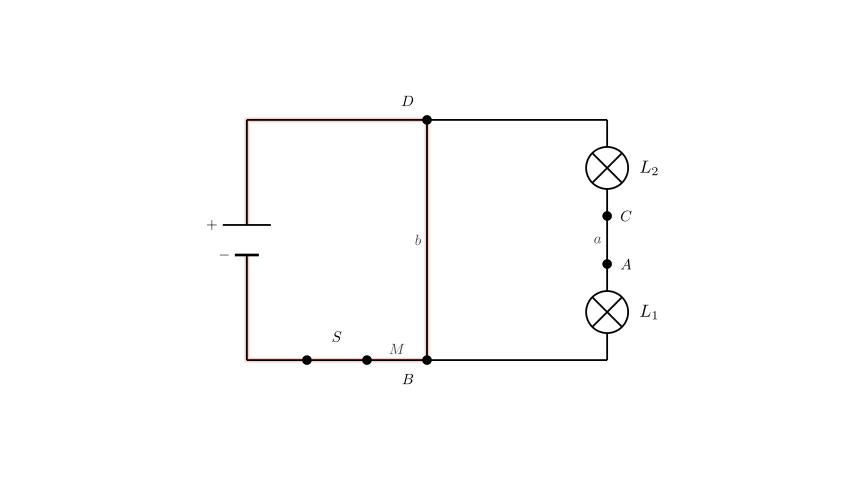
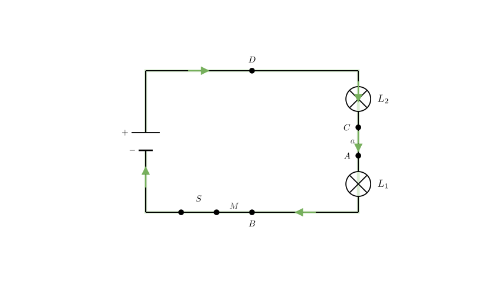

Problem Statement: The circuit is shown in the figure. Which of the following analyses is incorrect? A. After S is closed, the circuit will short-circuit. B. After S is closed, L₁ and L₂ are connected in parallel and both can light up. C. To make L₁ and L₂ connected in series, wire b can be removed. D. If wire M is moved from terminal B to terminal A, then lamps L₁ and L₂ are connected in parallel.
Solution Approach: To solve this problem, we need to translate the physical wiring diagram into a circuit schematic to analyze the current paths. We will: 1. Trace the current flow from the positive terminal of the power source. 2. Identify nodes and connections to determine if the bulbs are in series, parallel, or if a short circuit exists. 3. Evaluate each option (A, B, C, D) by conceptually modifying the circuit as described. 4. Identify the false statement among the options.

Step 1: Analyzing the Original Circuit (Options A and B)
Let's trace the circuit connections based on the diagram: - The positive terminal (+) of the battery connects to terminal D of lamp $L_2$. - A wire (labeled b) directly connects terminal D to terminal B of lamp $L_1$. - A wire (labeled M) connects terminal B to the switch S. - The switch S connects to the negative terminal (-) of the battery.
Analysis of Current Flow: When switch S is closed, current flows from the positive terminal to D. At D, the current has two choices: go through lamp $L_2$ or go through the conductive wire b. Since wire b has negligible resistance, the current flows directly to B. From B, it flows through wire M and the switch back to the negative terminal.
Conclusion for A and B: - The path Battery(+) → D → B → S → Battery(-) contains no electrical load (bulbs), only wires and a switch. This creates a short circuit. - Because the current bypasses the bulbs through this low-resistance path, the bulbs will not light up, and the battery or wires could be damaged. - Therefore, Option A is correct (a short circuit occurs). - Option B is incorrect (the bulbs do not light up; they are shorted out). Since the question asks for the error, B is our target answer.

Step 2: Analyzing Option C (Series Connection)
Option C suggests removing wire b. Let's see what happens to the path of the current: 1. Current leaves the positive terminal to D. 2. Without wire b, current must go through lamp $L_2$ to reach terminal C. 3. From C, it travels through wire a to terminal A. 4. From A, it flows through lamp $L_1$ to terminal B. 5. From B, it goes through wire M and the switch to the negative terminal.
Conclusion for C: The current flows sequentially through $L_2$ and then $L_1$ ($L_2 \rightarrow L_1$). There is only one path for the current, which is the definition of a series circuit. - Therefore, Option C is correct.
Step 3: Analyzing Option D (Parallel Connection)
Option D suggests moving wire M from terminal B to terminal A. Let's analyze the nodes (junction points): - High Potential Node: The positive terminal connects to D. Wire b connects D to B. So, points D and B are at the same high potential. - Low Potential Node: The switch (connected to negative) now connects to A. Wire a connects A to C. So, points A and C are at the same low potential.
Connections: - Lamp $L_1$ is connected between A (Low) and B (High). - Lamp $L_2$ is connected between C (Low) and D (High).
Conclusion for D: Since both lamps are connected independently across the same high and low potential points, the current splits to go through both simultaneously. This is a parallel circuit. - Therefore, Option D is correct.
Final Answer: The analysis shows that statements A, C, and D are physically correct descriptions of the circuit behavior. Statement B claims the bulbs will light up in parallel in the original configuration, but we proved the original configuration is a short circuit where bulbs do not light.
The error is in option B.